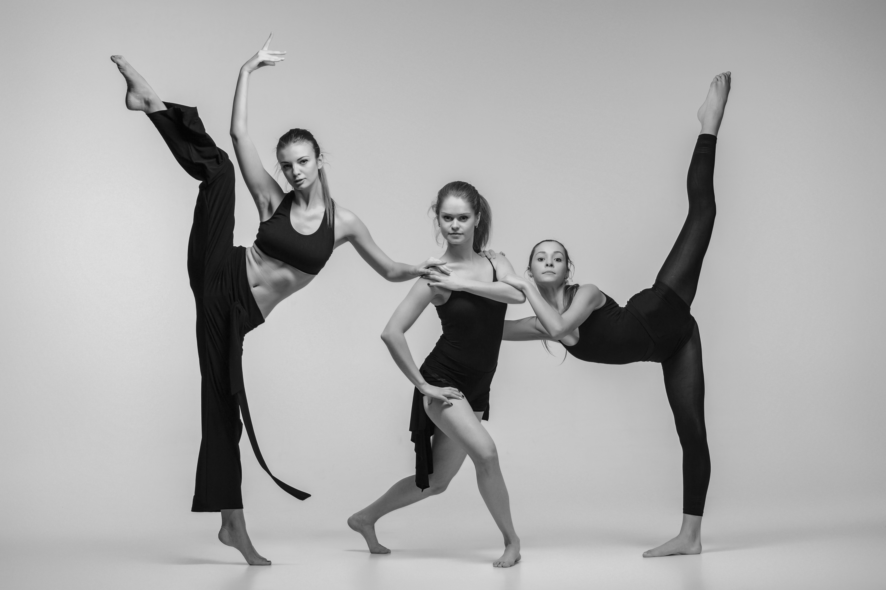
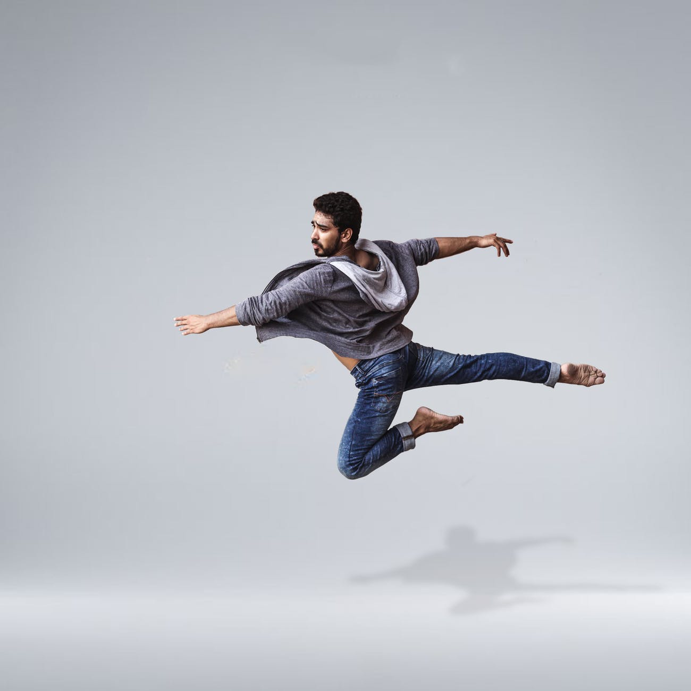

CONTEMPORARY

I use to dance since I was in primary school. Breaking the conventional style of dance, contemporary focuses on the freedom of movement. When performing, dancers focus on connecting their mind and body through fluid dance moves.
JAZZ

It makes it more fun. If you can latch onto a secondary beat, you're not doing the same thing over and over again. Jazz frees you up from that. Some people like to do the same swing step they learned from a dance instructor again and again, but it's more enjoyable to always be moving from one movement to the next.